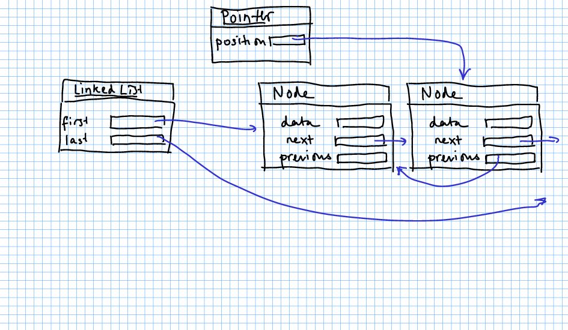

The Java-style list iterators have to remember complex state for remove and set. That makes them hard to understand and use. Other collection libraries have much simpler iterators. In this exercise, you will implement one. To avoid confusion, we'll call it a list pointer.
A list pointer points to an element. As with iterators, you can move it forward and backward. Call get to get the data to which the pointer points, or set to change it. The add method adds an element before the pointer. The remove method removes the element at the pointer and moves the pointer to the next position. You can call these methods as often as you like without having to call next or previous in between.
Note that for a list of length n there are n + 1 valid pointer positions: the n elements and after the last element. You cannot get, set, or remove at that position, but you can add.

Draft: Only implement next, hasNext, get, set.